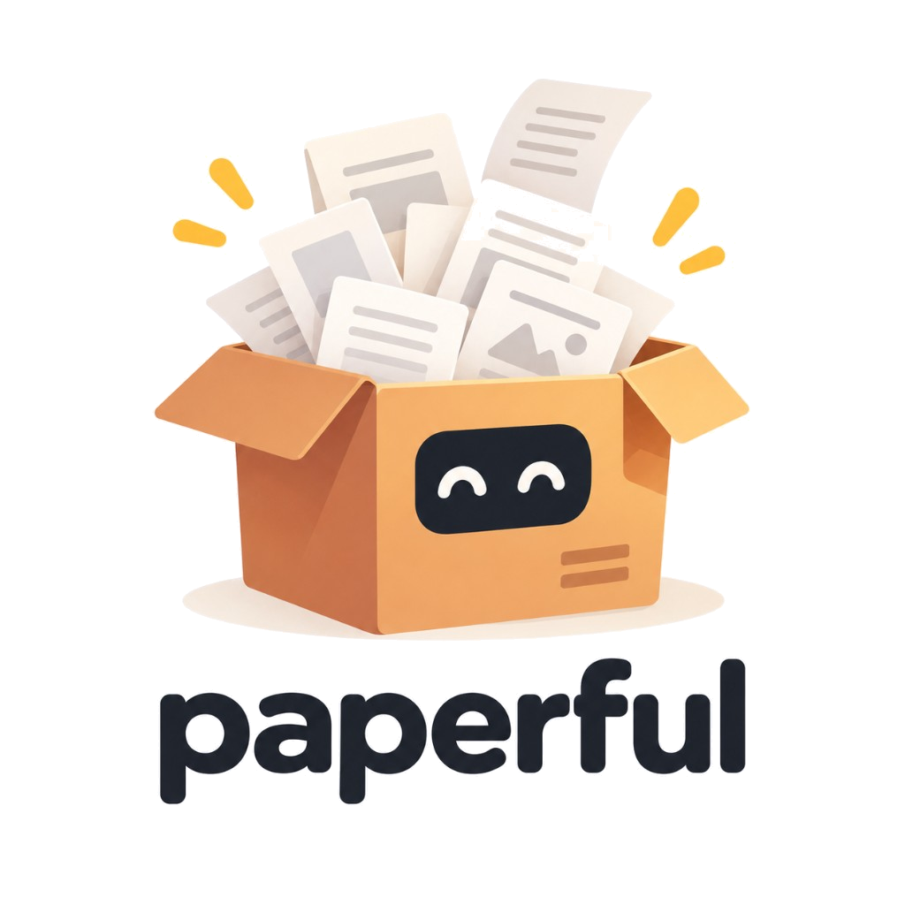

paperful
Keep the library. Keep the files. Keep control.
A local sidecar for your research library: collections organised, metadata linted, a quiet copy on disk. It fills what open-access indexes, campus EZProxy, and grey playbooks can reach — not every paywalled or DOI-less item. Zotero is the well-tested catalogue. Mendeley and EndNote adapters are seeking testers. Work stays on this machine.
The sidecar beside Zotero
Open access first. Campus EZProxy when you have a subscription. Sci-Hub is opt-in and off by default.
On disk first
Downloads land under out/. Resume lives in
state/. Zotero is read in, then written back —
attach and metadata apply are separate steps.
A quiet copy you own
snapshot writes one folder per item
(record.json, optional PDF, notes).
restore recreates only what Zotero is missing.
Copy the tree; paperful is not a sync service.
Routed sources
Each item only hits sources that match its metadata unless you
pass --try-all. A circuit breaker skips blocked
sources for the rest of the run.
Campus when you have it
Log in once in your system Chrome or Edge. EZProxy uses your library entitlement. Passwords never live in TOML.
Grey literature
Journal PDFs ingest cleanly in Zotero. Reports and scans often do not. An example ocean and governance playbook keeps UN, FAO, ISA, and similar landings as real PDFs. It is not a universal grey-literature harvester. Optional HTML→PDF covers blogs and news. Local summaries need a text layer — not OCR.
What can I do with it?
- Fill a collection with PDFs that open access, campus access, and your playbooks can reach
- Keep a folder tree that matches Zotero collections
- Snapshot the library to disk and restore only missing items
- Lint DOIs and propose metadata patches on disk
- Find duplicate items, review a pack, then trash extras
- Optionally summarise a PDF you already have, on this machine
- Use campus EZProxy without storing your password
- Opt in to Sci-Hub only when you choose to
Walkthrough: commands · dedupe. Not sure if this is the right tool? why · comparison · architecture.
On your machine
paperful is a local CLI. Catalogue reads and PDF writes go through
Zotero’s local API. Session cookies stay under
state/sessions/. Sci-Hub stays off until you add it
to sources or pass --scihub.
From a checkout to a filled collection
-
Copy
config.example.toml, setemailandout_dir, then runpaperful doctor. -
List collections with “No PDF” counts:
paperful collections. - Dry-run a collection, then fetch and attach.
- Optionally log in to EZProxy or Scholar before a big run.
Install
Build it on this machine. 0.x · build locally · no PyPI. Zotero stays on the host, with the local API enabled.
git clone https://github.com/glen-w/Paperful.git
cd Paperful
cp .env.example .env
cp config.example.toml config.toml
docker compose build
docker compose run --rm paperful doctor
docker compose run --rm paperful run --collection interesting --dry-run
# academic recipe: docker compose run --rm paperful run -C COLLECTION --preset eoi --dry-run
There is no docker pull and no
pip install paperful.
Docker
is the operator path.
Zotero setup.
Contributors use
uv
(see the repository README). Zotero and headed logins still run
on this machine.
Details: Documentation · 0.x / 1.0 · README